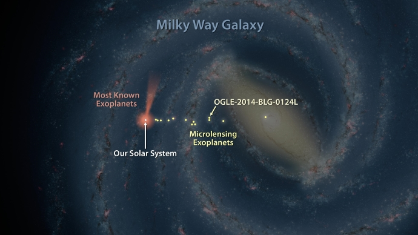

Summary of our Solar System
Earth is one of eight planets in our Solar System. Many other bodies inhabit our Solar System, with the most obvious perhaps being our star, the Sun, which accounts for 99.86% of the total content mass in the Solar System.
The Solar System is inside the Milky Way galaxy, which contains over 100 billion other stars with at least one orbiting planet. The Milky Way is inside the universe, which has billions of other galaxies within it.
The Sun is at the centre of our Solar System and is orbited by all of the other bodies it contains, such as the eight planets, five dwarf planets and asteroids.
The planets are massive enough to be made spherical by their own gravity and to clear all other comparable sized objects from their orbit of their star. Planets can also have a number of orbiting moons, which are called 'natural satellites'.